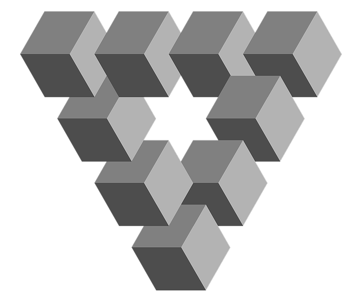

Chapter 3 Fallacies and Biases

OpenClipart-Vectors at pixabay.com
Reality is, you know, the tip of an iceberg of irrationality that we’ve managed to drag ourselves up onto for a few panting moments before we slip back into the sea of the unreal.
—Terence McKenna
Throughout our discussions of logic so far, you may all have been wondering how often anyone ever lives up to the standards of logical reasoning as we have laid them out here. It may seem fairly obvious that most people do not seem to be either willing or able to accept only those claims that are conclusions of sound arguments, but instead we often decide based on feelings and instincts or on the basis of what we just want or assume to be true at the outset. In fact, there is a theory of the origins of our capacity for logical reasoning known as the “argumentative theory of reasoning” that claims that our logical abilities, such as they are, evolved to enable us to “prove” ourselves right. Before the abstract study of logic was invented by Aristotle, who sought the universal principles governing reasoning, we were all already adept at persuading others by manipulating logic for the sake of convincing others that we were right and hence asserting social dominance, whether or not our claims were truly justified. It seems, in other words, that the rhetoricians were right after all that logic is just one means of persuasion among others, no better or worse than them, but maybe more or less effective in different contexts.
Or is it? As we saw in the last chapter, there is something to be said for being logical. Put simply, valid and sound reasoning really just boils down to not saying more than you really know and this seems like a pretty reasonable approach if we want to figure out what is true and what is not. It is, however, abundantly clear that us humans often fail to abide by this principle and make claims that we really don’t have much support for. This chapter explores two related ways we do this – by committing fallacies and by getting caught by various “cognitive illusions.” Fallacies are bad arguments – they are typically invalid – that are often used to try to convince someone of some point that really has little argumentative support. They work, to the extent that they do, because they take advantage of certain weaknesses in our reasoning skills. As we will be seeing, a careful analysis of how various different forms of fallacious reasoning work and of what mistakes they make can provide us with a certain degree of protection from those who would use them to convince us of things that have little real support. Cognitive illusions are related in that they lead to mistakes in reasoning, but they are often more difficult to spot and avoid falling prey to, since they are mistakes rooted in mental shortcuts that can be reliable in certain contexts. Like visual illusions, they are false representations of reality, which, even if we know they are false, we cannot help falling prey to. Looking at some common cognitive illusions can help us to see, however, why we should sometimes not trust our own thought processes as much as we often do. And this as well can provide us with more tools for distinguishing between between what is really the case and what just seems to be so.
As we turn to examine some important logical fallacies it is helpful to keep in mind that there are both many more particular fallacies than the ones we are going to look at and also many different ways of categorizing them. The thing to keep in mind here is that all stretch logical support beyond its breaking point, and how in particular this happens is not always so clear. On the other hand you can usually see the weakness of an argument that relies on a fallacy by asking yourself a simple question about it: What is being claimed here, and on the basis of what? This often reveals the basic weakness of the argument as it involves stepping back from the particular claims being made in order to see the broader pattern and strategy of reasoning involved. It is this pattern that is flawed, regardless of the content of the argument. As a result, we can often find instances of the same form of fallacious reasoning used with many different topics, especially those that are controversial.
In addition it can be helpful to look at fallacies in terms of a few more general types of mistakes in reasoning. That is what we will do here as we examine some different forms of bad reasoning under the headings: fallacies of relevance all of which depend on premises not relevant to the conclusion; fallacies of ambiguity all of which depend on the ways in which many words and expressions can have multiple and often incompatible meanings; and fallacies of presumption," which depend on unacknowledged, unjustified extra assumptions.